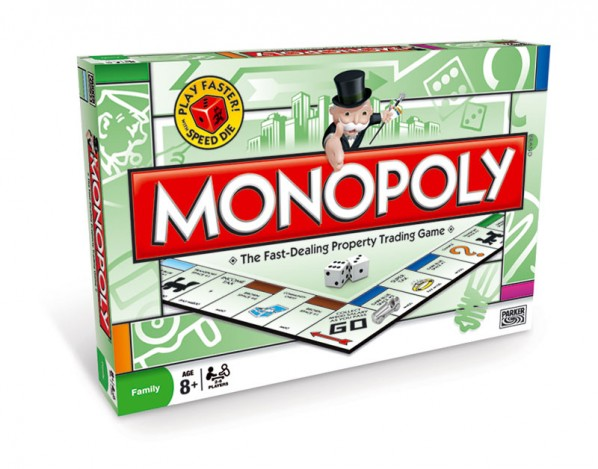

El juego de mesa más vendido de la historia
Antes
Un juego creado con la funcion de servir como herramienta para enseñar ls teorías acerca de la justicia social y económica extraídas del estudio titulado Progreso y Miseria de Henry George.
Monopoly
Comercializado por vez primera en el año 1936.
A la largo de 80 años, el juego a sufrido una notable evolución.Sus múltiples ediciones y sus tantas versiones han dad pie a que se cambiara desde la caja que lo contiene hasta los elementos que los componen.Logrando así, mantenerse como el favorito a través de las décadas.
Ahora
Con los años la finalidad del juego cambió para solo disfrutar un buen rato,negociando propiedades y hasta haciendo uso de medios electronicos para todas las transacciones que requiere el juego.